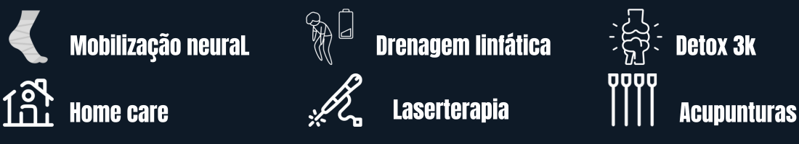
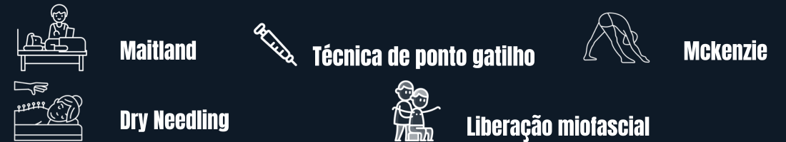
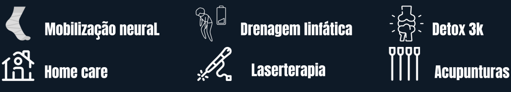
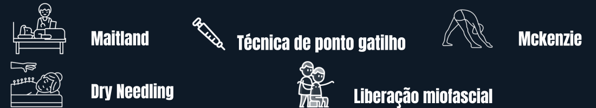

Defina Horário
Dias abertos:
Seg – Sex: 09:00 as 20:00 Sabado : 07:00 as 17:00
Não funcionamento:
Todos os Domingos Todos feriados oficiais
Seg – Sex: 09:00 as 20:00 Sabado : 07:00 as 17:00
Todos os Domingos Todos feriados oficiais
Agulhamento a seco ou dry needling é o nome do tratamento para dor miofascial que tem se popularizado entre médicos.
A liberação miofascial é uma terapia manual que previne lesões e alivia dores musculares.
A filosofia básica do Método McKenzie é que a posição ou movimento inverso pode abolir a dor e restaurar a função.
A Mobilização Neural (MN) é uma técnica que tem como objetivo restaurar o movimento e a elasticidade do SN.
A quiropraxia é uma técnica que lida com diagnóstico, tratamento e prevenção de problemas no sistema neuro-músculo-esquelético. Ela atua na correção de postura, no alongamento da musculatura e no alívio de dores. A quiropraxia é reconhecida como uma especialidade da fisioterapia no Brasil, mas possui objetivos diferentes. Enquanto a fisioterapia visa recuperar os músculos e tratar lesões, a quiropraxia foca no alívio de dores, incômodos e no bem-estar geral. Essa abordagem pode ser usada para tratar diversas condições, como dores na coluna, hérnias de disco, dores de cabeça e tensões musculares. É importante que a quiropraxia seja realizada por um profissional treinado e não é indicada para pessoas com osteoporose grave ou risco elevado de AVC. Antes de iniciar o tratamento, é recomendado consultar um ortopedista ou clínico geral.
Fiz um tratamento para a coluna cervical, onde cheguei com muitas dores, e tensão. Já na primeira sessão sai aliviada, e no fim do tratamento estava muito melhor! Super recomendo o dr. Paulo, muito atencioso, da várias dicas pra melhorar as dores mesmo que em casa, com exercícios. Localização de fácil acesso, e preço acessível.
Milene
SouzaO doutor é um ótimo profissional, cheguei com o pescoço travado e voltei MUITO melhor, recomendo muito, nota 10!👏🏻👏🏻
Nick
StephanyRecomendo demais! O Paulo é super atencioso, não tem pressa em atender o paciente, tirou todos os paradoxo que o médico deixou. Enfim, me sinto outra pessoa com apenas duas sessões feita até hoje.
Mauricio
SouzaÓtimo profissional, o único que conseguiu de fato consertar minha cervical hahaha! Antes de conhecer o dr. Paulo, tive dores na lombar e na cervical por mais de 2 anos por conta do trabalho no escritório, tentei diversos métodos e nada resolvia. O Dr. Paulo sabe o que faz, tem técnicas avançadas e te ensina exercícios para fazer em casa (que ajudam MUITO no tratamento). Fiz 4 sessões e não sinto mais NENHUMA dor!
Paulo
SilvanoProcurei um profissional em Osasco pelo Google, encontrei o perdido Paulo, muito atencioso e fez um trabalho incrível em meu ombro em 1 sessão, com toda certeza retornarei.
Felipe
Araujo{kind=link}
{kind=link}
{kind=link}
{kind=link}
{kind=link}
{kind=link}
{kind=link}
{kind=link}